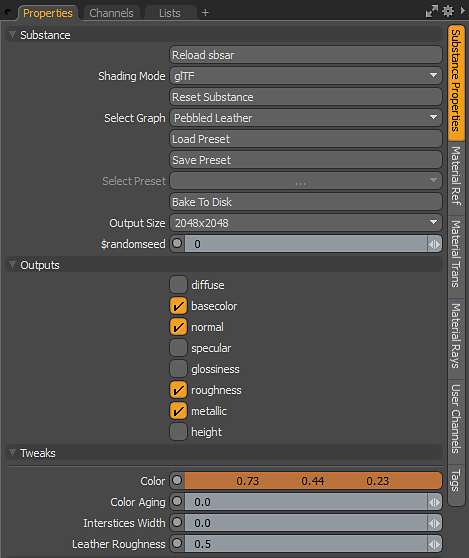
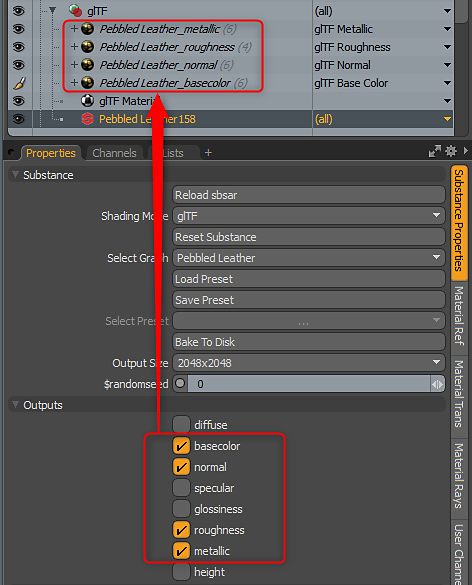
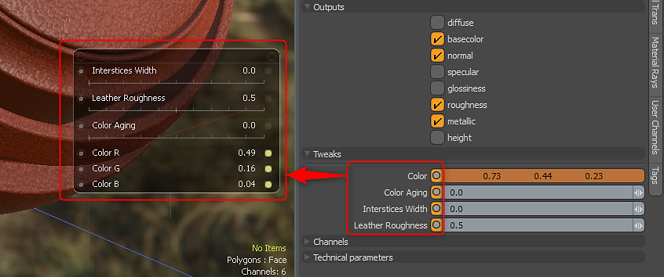

A Substance has a set of core parameters. These parameters are divided into Substance, Outputs and Tweaks. They can be found in the Substance Properties panel.
Substance from Substance Source will contain Technical Parameters and Channels. The Channel options have no effect in MODO. Outputs are enabled/disabled using the Outputs section.

A Substance has a set of core parameters, which can be found in the Substance category of the Substance Properties panel.
The Output options allow you to enable or disable Substance outputs. An output is what is generated by the Substance Engine and rendered as a texture in the Shader Tree.

Tweaks are parameters that are authored in the Substance file and editable in MODO. You can select channels and in Item Mode use Channel Haul to gain the controls together in a popup controller.
